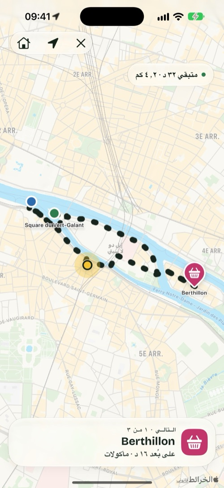
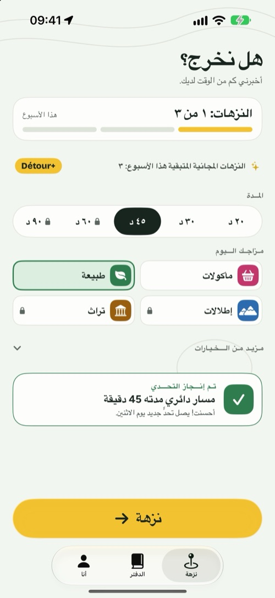
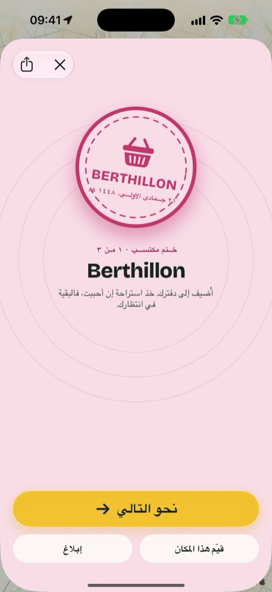
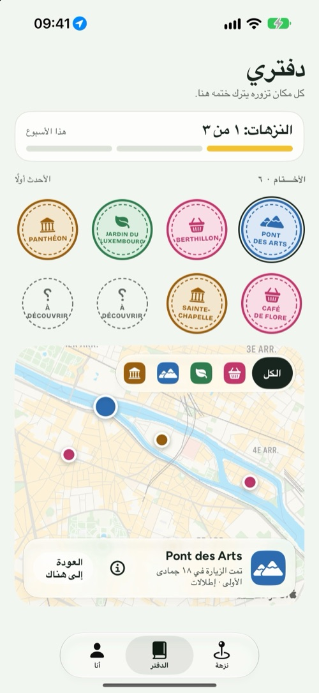

Détour
أخبرني كم من الوقت لديك، وسأمنحك سببًا وجيهًا للخروج في نزهة مشي.
لأجهزة iPhone وiPad وiPhone Duo · مجاني، مع Détour+ اختياريًا

ثلاثة اختيارات، وأنت في الخارج.
Détour لا يخبرك كيف تنتقل من أ إلى ب. إنه يمنحك سببًا للذهاب، ثم يعيدك إلى بيتك.
مدتك
20 أو 30 أو 45 دقيقة أو أكثر. ينطلق المسار الدائري من مكانك ويعود إليه.
مزاجك
مأكولات أو طبيعة أو إطلالات أو تراث: من 2 إلى 4 أماكن حقيقية تصل إليها في الطريق.
انطلق
اتبع المسار. كل مكان تصل إليه يُسجَّل تلقائيًا ويترك ختمًا في دفترك.
ذرائع للمشي، لا جولات سياحية.
نزهة في أربع شاشات.



مغلقًا في يدك، ومفتوحًا على الخريطة.
- وهو مغلق، يظهر الأساسي على الشاشة الخارجية: المدة والمزاج و«انطلق».
- وهو مفتوح، تجد الإعدادات في جانب، والمسار وهو يُرسم في الجانب الآخر.
- وضع المفاجأة: تظهر الأماكن التالية أثناء الطريق.
- أثناء المشي، يبقى المكان التالي والمسافة ظاهرين على شاشة القفل وفي Dynamic Island.
- هدف الأسبوع، والشارات، وتحدٍّ جديد كل أسبوع، وإمكانية حفظ كل نزهة في تطبيق صحة إن شئت.

مجانًا لتكوّن العادة. وDétour+ لتذهب أبعد.
نزهات غير محدودة، والأمزجة الأربعة، ومسارات حتى 90 دقيقة مع اختيار نوع الأرض، ووضع المفاجأة.
سنوي
كل عاماشتراك سنوي مع فترة تجربة
شهري
كل شهربلا التزام
مدى الحياة
مرة واحدةدفعة واحدة، للأبد
مجانًا: 3 نزهات أسبوعيًا، ومزاجا الطبيعة والمأكولات، حتى 45 دقيقة، مع الدفتر والشارات. تختلف الأسعار حسب البلد وتظهر في App Store. تُدار الاشتراكات وتُلغى من إعدادات حساب Apple.
نزهتك لا تراقبك.
لا شيء لتنشئه ولا شيء لتتذكره. يبقى دفترك على iPhone.
يُستخدم لرسم المسار والتحقق من الأماكن، أثناء النزهة فقط.
لا أدوات تتبّع إعلانية. التفاصيل في سياسة الخصوصية.